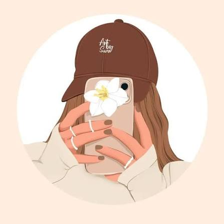
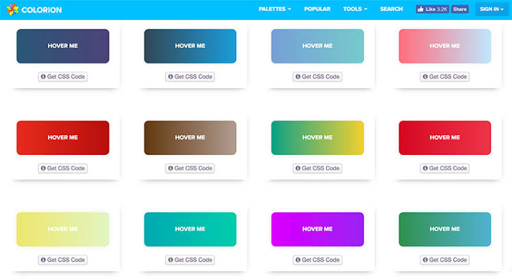
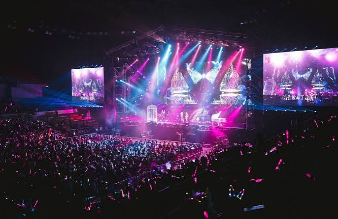
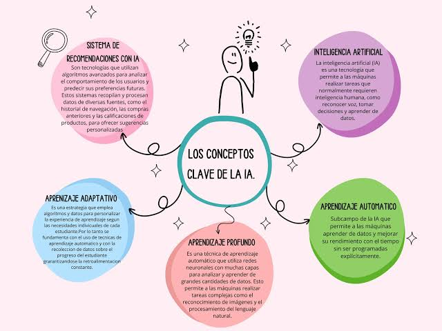

Proyecto Modular
Sitio web multipágina e interactivo para EcoAura, emprendimiento enfocado en soluciones ecológicas, eficiencia energética y paisajismo sustentable en el Valle de Aburrá.
Ver proyecto →Soy estudiante de Ingeniería en Inteligencia Artificial y Datos. Me encanta aprender, resolver problemas y construir cosas útiles con código. Disfruto tanto del frontend como del backend, y me emociona todo lo relacionado con la inteligencia artificial, el análisis de datos y la experiencia de usuario.
Ideas
→ Código
→ Soluciones
0EMOJIS
Sitio web multipágina e interactivo para EcoAura, emprendimiento enfocado en soluciones ecológicas, eficiencia energética y paisajismo sustentable en el Valle de Aburrá.
Ver proyecto →
Bienvenido a Rueda Libre, una plataforma web moderna e interactiva diseñada para ofrecer una experiencia completa de movilidad sostenible en Medellín.
Ver proyecto →
Desarrollo de un perfil personal y profesional utilizando únicamente HTML estructurado. La actividad se enfoca en la organización clara del contenido, el uso correcto de etiquetas semánticas y la presentación estratégica de información básica.
Ver proyecto →
Práctica enfocada en la estilización con CSS para personalizar botones interactivos. La actividad explora la aplicación de colores, efectos de transición, pseudo-clases como hover y propiedades visuales para mejorar la experiencia de usuario.
Ver proyecto →
Plataforma web diseñada para la gestión y visualización de eventos. Permite explorar próximas actividades, consultar fechas clave, horarios y detalles importantes en una interfaz limpia, organizada y funcional.
Ver proyecto →Práctica enfocada en la integración y manipulación de elementos multimedia en la web. La actividad explora la inserción correcta de archivos de audio, video y etiquetas de imagen, asegurando su compatibilidad y correcta visualización en la página.
Ver proyecto →Sitio web para presentación de conferencistas desarrollado con HTML y CSS. La actividad se centra en la maquetación de perfiles, organización de ponencias y diseño visual adaptativo para la difusión de eventos académicos y profesionales.
Ver proyecto →Asistente interactivo en JavaScript que simula un sistema RAG (Retrieval-Augmented Generation) consultando una base de conocimientos estructurada para contextualizar sus respuestas. Mejora la precisión de la IA al responder sobre tareas y conceptos técnicos registrados previamente.
Ver proyecto →Soluciones a retos de Inteligencia Artificial implementadas en PSeInt y consolidadas en formato .txt para optimizar su lectura y análisis estructurado. Demuestra el diseño de lógica algorítmica y control de flujos aplicados a problemas clave de IA.
Ver proyecto →En Inteligencia Artificial, el principio KISS (Keep It Simple, Straightforward) promueve priorizar soluciones y modelos simples sobre arquitecturas complejas. Su objetivo es evitar el sobreajuste (overfitting), reducir el consumo de cómputo y garantizar la interpretabilidad del sistema.
Ver proyecto →
Sitio web para presentación de conferencistas desarrollado con HTML y CSS. La actividad se centra en la maquetación de perfiles, organización de ponencias y diseño visual adaptativo para la difusión de eventos académicos y profesionales.
Ver proyecto →¿Tienes un proyecto en mente o simplemente quieres conectarte? ¡Me encantaría saber de ti!
¡Gracias por estar aquí!